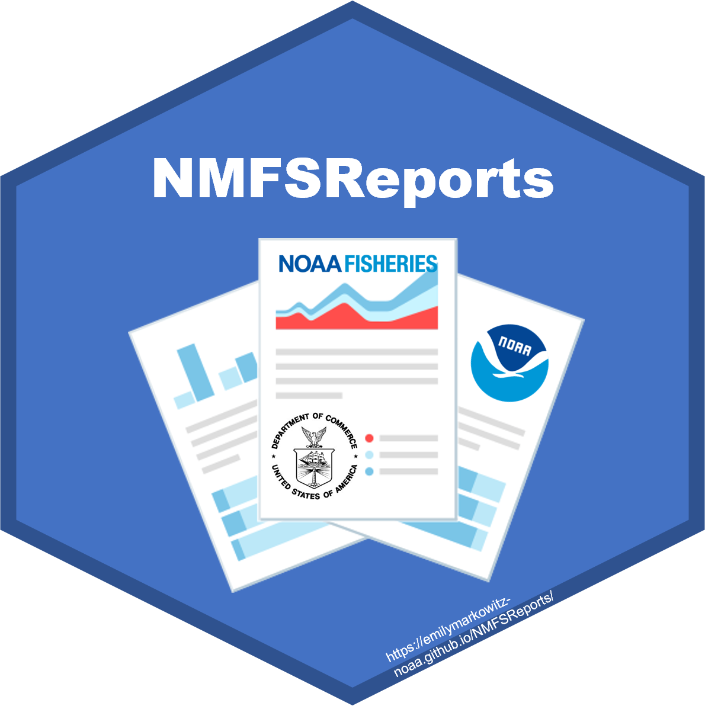

NMFSReports 
Easily write NOAA reports and Tech Memos in R Markdown
Installation
NMFSReports
Learn more about this package at this pkgdown webpage!
The NMFSReports Package has all of the basic architecture you need to create reproducible and repeatable NOAA Tech Memos in R Markdown! This approach is perfect for efficiently rolling out annual (or other regular) reports or reports with formulaic sections (the same chapter structure but for a different area or species). Scripts integrate table, figure, data, and bibliography management and design automation.
library(devtools)
devtools::install_github("EmilyMarkowitz-NOAA/NMFSReports")
library(NMFSReports)
# Or, alternatively,
remotes::install_github("EmilyMarkowitz-NOAA/NMFSReports@main")
You may also consider useing this package with nmfspalette
A package for NOAA Fisheries color schemes. More info here.
library(devtools)
devtools::install_github("nmfs-general-modeling-tools/nmfspalette")
library(nmfspalette)Conference Presentations
Markowitz, EH. Reproducible Reports in R Markdown - Perspectives and {NMFSReports}. R Cascadia Conf., June 2021. Remote. (Slides, Recording of Presentation)
Markowitz, EH. Reproducible National-level Reports: Using RMarkdown to Recode the Fisheries Economics of the US Report.
- Women in Statistics and Data Science Conf.; American Statistical Association, September 2020. Remote.
- American Fisheries Society, September 2020. Remote.
- SatRDay Conference, March 2020. Washington, D.C./Remote. (Recording)
Abstract
Scientists in government and beyond are often tasked with preparing analysis-driven reports that inform policy and are crucial for documenting the state of their programs at regular intervals (e.g., annually, quarterly, monthly). Although these reports typically follow the same format for each iteration, updating content with new data from previous document line by line can lead to inefficient writing and introduce errors.
Alternatively, R and R Markdown can be used to systematically modernize report creation. To address this need within our agency I have developed a new R package, NMFSReports, which uses R and R Markdown to provide an analysis-to-product approach to report writing by centralizing back-end data analyses and efficiently streamlining copy-edit and design sub-processes. The NMFSReports R package first creates the basic report outline and folder architecture to create reproducible reports, and then provides users with grammar and organization helper functions that assist in report writing. To aid in the final publication process, this workflow can also be used to produce intermediate output files for subject matter experts and collaborators to review and use. NMFSReports can produce copy-edit ready and accessibility-compliant documents for editors, style guide-formatted and flow-in ready text (including bibliography, footnote, figure, and table management) for authors, tables and figures for graphic designers, and web-ready data files for web tool developers. Though this package is in early stages of development, it is already clear it has the potential to save colleagues across our agency countless hours and improve efficiency and consistency among our teams and offices. Though developed for reports produced by scientists at NOAA Fisheries, the concepts and structures behind NMFSReports have utility for anyone seeking to streamline reports, graphics, and web tools.
NOAA README
This repository is a scientific product and is not official communication of the National Oceanic and Atmospheric Administration, or the United States Department of Commerce. All NOAA GitHub project code is provided on an ‘as is’ basis and the user assumes responsibility for its use. Any claims against the Department of Commerce or Department of Commerce bureaus stemming from the use of this GitHub project will be governed by all applicable Federal law. Any reference to specific commercial products, processes, or services by service mark, trademark, manufacturer, or otherwise, does not constitute or imply their endorsement, recommendation or favoring by the Department of Commerce. The Department of Commerce seal and logo, or the seal and logo of a DOC bureau, shall not be used in any manner to imply endorsement of any commercial product or activity by DOC or the United States Government.
NOAA License
Software code created by U.S. Government employees is not subject to copyright in the United States (17 U.S.C. §105). The United States/Department of Commerce reserve all rights to seek and obtain copyright protection in countries other than the United States for Software authored in its entirety by the Department of Commerce. To this end, the Department of Commerce hereby grants to Recipient a royalty-free, nonexclusive license to use, copy, and create derivative works of the Software outside of the United States.

U.S. Department of Commerce | National Oceanographic and Atmospheric Administration | NOAA Fisheries